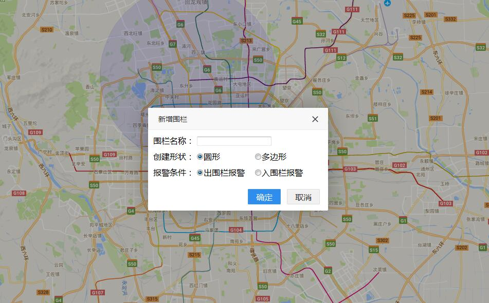
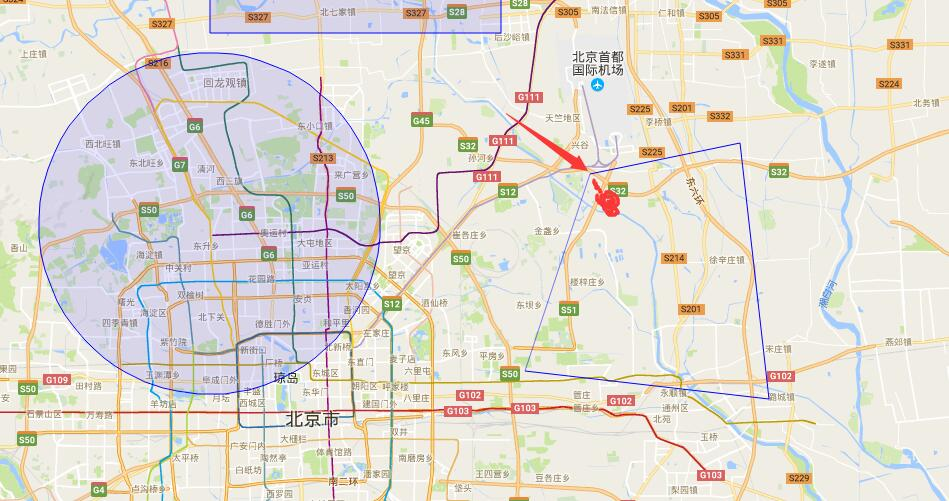
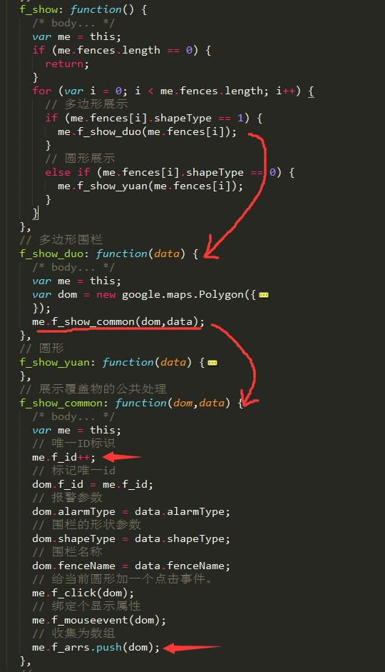

1.运行
* git clone ;
* npm install
* $ gulp;
* 替换自己的key值。V3版本。
2.项目说明
- 此项目配合 谷歌监控点实时追踪 的第二功能模块，对监控的点进行围栏设置。
- 此项目我尽量是模仿百度地图围栏设置的JS写的面向对象，大家在学习的过程中可以参照百度围栏的JS的抒写：百度围栏设置的面向对象JS文件
2.1 围栏渲染
- 点击区监控监控对象，拿到被监控对象的围栏信息，传入下面的对象中：
this.fences = opts.fences;
//我这里模拟里一些围栏的数据
this.fences = [{
alarmType: 1,
center: [
{ lng: 116.336691, lat: 40.006788 }
],
fenceName: '围栏1',
radius: 10000,
shapeType: 0
}, {
alarmType: 0,
center: [
{ lng: 116.336691, lat: 40.106788 },
{ lng: 116.336691, lat: 40.207299 },
{ lng: 116.536691, lat: 40.207299 },
{ lng: 116.536691, lat: 40.106788 },
],
fenceName: '围栏2',
radius: null,
shapeType: 1
}, ];
- 渲染拿回来的数据成围栏：（数据里面有区别圆形和多边形的区别的字段
这里shapeType：0代表圆形，1代表多边形）这个地方和百度处理的一样：
for (var i = 0; i < me.fences.length; i++) {
// 多边形展示
if (me.fences[i].shapeType == 1) {
me.f_show_duo(me.fences[i]);
}
// 圆形展示
else if (me.fences[i].shapeType == 0){
me.f_show_yuan(me.fences[i]);
}
}

2.2 新增围栏
- 点击新增围栏，弹窗进行围栏基本信息输入：界面和百度围栏写的一毛一样...

- baiu:选项多边形围栏进行绘制，绘画之前进行提示：多边形绘制完成需双击：
- goole:没有进行提示，因为google的多边形绘制闭合时，鼠标会自动变成小手状，给用户很好的提示了已经。

var type = me.shapeType = $('#type input[name="type"]:checked').val();
if (type == 0) {
me.f_add_yuan();
}
// 多边形
else if (type == 1) {
//baidu:layer.msg('温馨提示：结束多边形绘制，请双击鼠标！');
me.f_add_duo();
}
2.3 保存数据
- baidu：每次绘制一个围栏都向后台进行发送围栏的所有数据进行保存：代码如下：
f_add_done: function(argument) {
var me = this;
me.drawingManager.addEventListener('overlaycomplete', function(e) {
me.drawingManager.close();
// 围栏报警参数
e.overlay.alarmType = me.alarmType;
// 围栏的形状参数
e.overlay.shapeType = me.shapeType;
// 围栏名称
e.overlay.fenceName = me.fenceName;
me.f_all();
});
},
// 所有围栏的事件
f_all: function() {
/* body... */
var me = this;
var all_f = me.map.getOverlays();
// 显示信息事件
me.f_mouseover(all_f);
// 所有围栏的点击事件
me.f_click(all_f);
// 向后台发数据的事件
me.f_send(all_f);
},
- google：这里本来不是单独的一项，但是在保存数据的地方和百度有巨大的区别，以至于年前我在想自己的代码可能按照编辑百度围栏那样的思想不可实现。年后和后台沟通说可能会要修改保存的接口。因为现在项目的需要有需要百度和google随时切换的功能。后台尽量是用一个接口，但是google这个蛋疼没有一个非常关键的API，就是获取页面的全部的覆盖物！！！坑爹啊！！！
- 但是我想了下，可以不用改接口，自己去实现获取地图全部的覆盖物的方法如下。另起一条吧，显得重要！O(∩_∩)O
2.4 收集所有
- 先说下保存围栏的数据是怎么保存的，我觉得这样不对，但是开头也是我给后台这样的思想，后来发现不合适也是我说的不合适，虽打了自己的脸，这一版就先这样吧。
- 所有的围栏的有关的接口就一个，那就是获取页面上所有的覆盖物，然后遍历拿到的覆盖物的数据，组装自己的数据，发给后台。后台不管以前的是什么数据，直接把原来的数据全部覆盖。这样就有一个不合适的地方，如何我只修改了一个围栏，但是我又所有的数据保存了一次。仔细想是非常不合适的。从上面看百度就是这样写的。
- google地图非常蛋疼没有获取页面所有的覆盖物的API。看哥怎么给你收集所有的覆盖物：往下看
- 首先我在构造函数中挂载了两个全局属性，一个是围栏的唯一标识用于区分围栏，一个是收集围栏的容器：
// 这里需要注意，百度地图有获取页面所有的覆盖物的API，google没有，我需要自己定义一个类ID的唯一标识
// 围栏的唯一标识
this.f_id = 0;
// 全局围栏数组
this.f_arrs = [];
- 然后在第一次进入页面时，如果有围栏的数据，渲染围栏的时候，就给拿到这个围栏DOM，我给它一个唯一ID，属性为f_id，把拿到的DOM收集到f_arrs数组中。这样一开始，我就先拿到了页面上已经有的围栏的数组。

- 接下来，我们新增一个围栏，注意我的围栏名字是 y1。
- 注意在新增完向后台发送的数据：
- 设置每次用工具画完后，进行一次id绑定和dom的收集，代码实现：
- 修改一个围栏完成，也向后台发送数据，这里因为f_arrs数组中保存的是每个DOM对象，对象的每个属性是什么？是索引啊，随意一开始给每个dom绑定的点击事件，又把dom传回去修改属性是没有问题的，代码实现：
- 同样删除一个围栏，也向后台发送数据。这里绑定的唯一ID就派上用场了，同样绑定的事件，拿到dom，判断数组中那个DOM的id和当前点击的DOM的id一样，就删除一个数组中特定的这个元素，因为有下标可以找到这个元素，代码实现如下：
- 然Baidu：一个API全部搞定，呵呵
var all_f = me.map.getOverlays();
me.f_send(all_f);
- 综上，google区别于baidu在围栏这块，最大的一个坑已经补上。下面的信息都和百度一样。
2.5 信息提示
- 鼠标放上去绘制好的围栏或一开始渲染的围栏上面，进行基本信息提示，因为这个提示不像marker自带的函数方法进行设置，这里我自己写了一个弹窗显示：
f_show_e: function(argument) {
/* body... */
var me = this;
var all_f = me.map.getOverlays();
// 显示信息事件
me.f_mouseover(all_f);
// 所有围栏的点击事件
me.f_click(all_f);
},
f_mouseover: function(arr) {
var me = this;
for (var i = 0; i < arr.length; i++) {
arr[i].removeEventListener('mouseover');
arr[i].addEventListener('mouseover', function(e) {
var str = '';
if (e.target.alarmType == 1) {
str = '出围栏报警';
} else {
str = '入围栏报警';
}
e.target.indexLayer = layer.msg('围栏名称：' + e.target.fenceName + '<span style="margin-left:20px;"></span>报警条件：' + str, {
time: 0, //不自动关闭
});
});
arr[i].removeEventListener('mouseout');
arr[i].addEventListener('mouseout', function(e) {
layer.close(e.target.indexLayer);
});
}
},
3.设计思想
- 围栏和列表一样，也是增删改查的操作，前端后台一样，由于一开始我的误导，现在后台除了查询，剩下新增，修改，删除都一样成为一个接口，就是覆盖原来的数据。
- 编辑的过程，我尽量是按照百度围栏的的构造函数写，因为好修改，好管理。你懂得。
- 最大的坑就是google没有一个成型的API是获取页面所有的覆盖物。
4.使用感受
- 先做个小总结，后期专门弄一篇博客说这个区别吧。google是前辈，我是先用的baidu，后期再用google设计项目时，发现好多API的名字！对，就是名字，Baidu和google一毛一样，你最起码改一个名字噻，名字就是一样好么。
- 个人感觉还是百度地图的API更好用，更现实。从上面那个收集所有的覆盖物就可以看出来。
- 一开始保存围栏的保存的误导，也是致使这个坑出现的原因，所有也有我的原因。